Sign in
- 1Open your phone's camera
- 2Point it at the code
- 3Tap the link and fill in the form
No phone? Tell a mentor and we'll sign you in.
void run() {...}
}
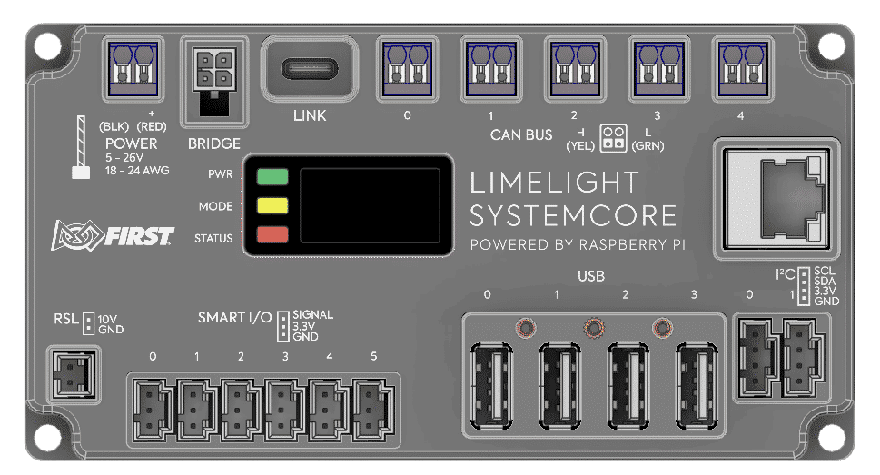
Our
Tools
From your laptop to the robot
From your laptop to the robot
So far your code has only run on your laptop. Today it learns to travel.
Every section today lights up one stop. At the end, one change travels all seven, live.
The toolbox
What the WPILib installer gives you
VS Code
With the WPILib extension. Where we write code.
Java 25
Already inside. No separate install.
Gradle
Builds the code. Works behind the scenes.
AdvantageScope
Graphs, 3D field, log replay.
Elastic
Live dashboard for the drivers.
FIRST Driver Station
Separate download. Drives the robot.
Always open robot code in WPILib VS Code
Plain VS Code
- No WPILib menu
- Wrong Java, or none
- No Build, Simulate or Deploy
- Red squiggles everywhere
WPILib VS Code
- WPILib logo menu, top right
- Java 25 already set up
- Build, Simulate, Deploy commands
- Team number remembered
VS Code survival skills
A tour of the VS Code window
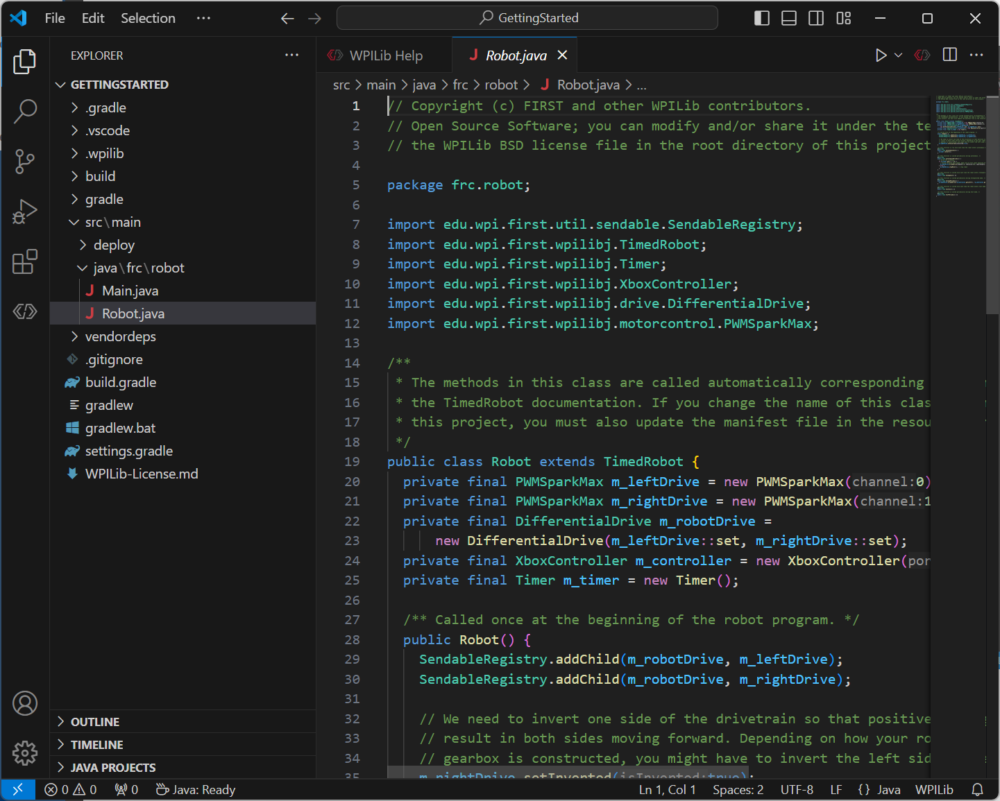
Each one is a part of VS Code you'll use every day.
The Command Palette finds every command
Then type what you want: WPILib, format, rename, search.
The WPILib logo in the top-right corner opens the same list, already filtered to robot commands.
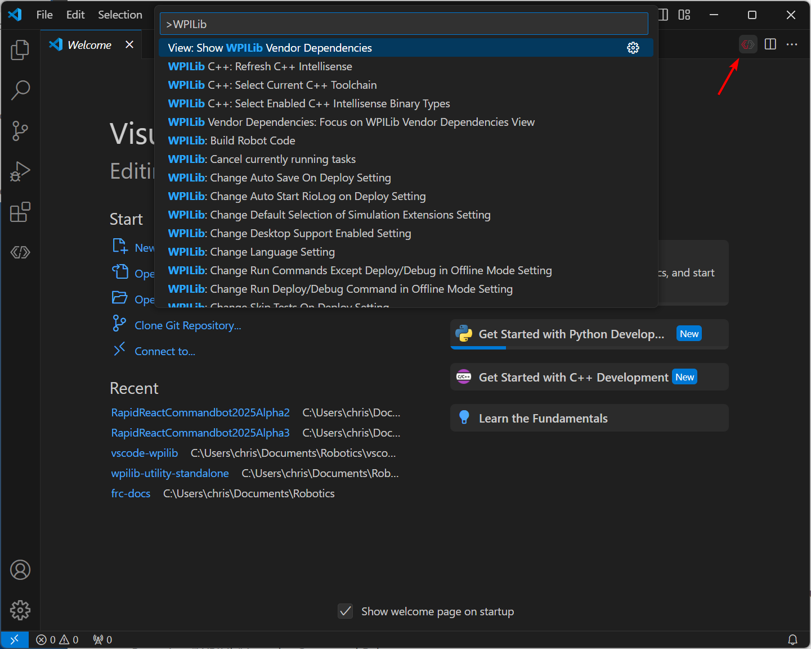
Let the editor do the boring parts
Squiggles show where. The Problems panel says what.
public void run() {
motor.setThrottle(⟦kIntakeSped⟧);
}
Tidy it up, then find anything
Format Document
Fixes all the indentation and spacing in one keystroke. Do it every time you finish a change.
Search across files
"Where is kIntakeSpeed used?" Every match, in every file.
VS Code scavenger hunt
Open the practice project and find...
- The file where the
Intakeobject is created - WPILib's own
PWMSparkMaxclass (Go to Definition) - The missing import in
Shooter.java: fix it with the light bulb - Rename
kIntakeSpeedtokIntakeThrottlewith F2 - Search across files for
stop(): which file calls it? - Format the messy file
Messy.java - The one remaining error in the Problems panel: read it out loud
- "Deploy Robot Code" in the WPILib menu (find it, don't run it)
One point per task. First pair to 8 shouts "Deployed!" (without deploying).
Anatomy of a robot project
How a robot project is created
- Project type: Template
- Language: Java
- Base: Command v3 Robot
- Location: pick a folder, name the project
- Team number: 245


What the wizard makes
Some of these you'll edit every day. The grey ones belong to Gradle, the tool that builds our code: we open those up in section 6.
Our project habits
One class per subsystem
In subsystems/: Intake, Shooter, Drivetrain, Arm.
Every number in Constants.java
Motor IDs, speeds, limits. static final, named with k.
Names that explain themselves
hasGamePiece(), not check2().
Format as you go
Shift+Alt+F (Mac: Shift+Option+F) every time you finish a change.
Stretch!
Back in 10 minutes. Next: Git, save points for your code.
Why version control?
"It worked yesterday!"
Git: save points for code
Like checkpoints in a video game. Each commit is a snapshot of the whole project, with a message, a name and a time.
Git is not GitHub
Git
- Takes the snapshots (commits)
- Keeps the whole history
- Works offline
- Built into VS Code
GitHub
- Keeps the team's copy in the cloud
- Where we share our work
- Where mentors review code
- github.com/Adambots-245
Git and GitHub, step by step
Eight words you'll hear every day
Branches: everyone gets their own line
- 1Commit twiceTwo save points on
main. - 2New branch
intake-speedstarts from the newestmaincommit. - 3Commit twiceWork on the branch.
maindoesn't move. - 4SwitchGo back to
main. - 5Commit onceSomeone else's work: two lines growing side by side.
- 6MergeThe branch's work joins
main.
main always works. New work happens on a branch.Staging: choose what goes in the snapshot
Changes edited, not saved in Git
Staged going in the next commit
Committed saved in history
You changed three files. Stage only the ones that belong to one idea.
Write messages future you can read
Bad
- stuff
- fixed it
- asdf
- changes
Good
- Stop intake when beam break sees a piece
- Move intake speed to Constants
- Fix shooter spinning backwards
Git inside VS Code
build/ and .gradle/ never show up under Changes: .gitignore leaves them out, because Gradle can rebuild them.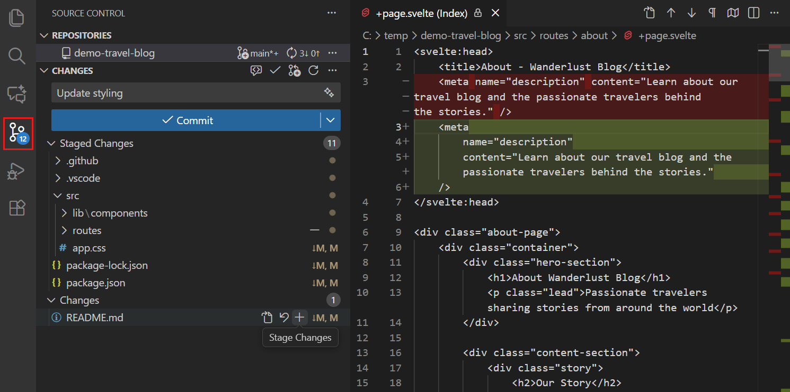
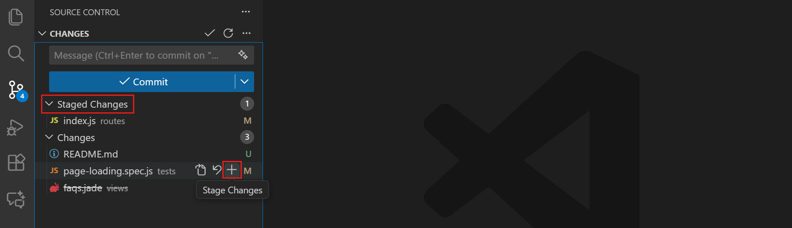
Branches in VS Code: create and switch
- 1Click the branch name, main, in the bottom-left corner.
- 2Choose + Create new branch...
- 3Type a name, like
yourname-first-commit, and press Enter.
- 4Click the branch name again.
- 5Pick the branch you want, like main.
☁ on a new branch means it isn't on GitHub yet. Click Publish Branch when you're ready.
Commit before you switch. Uncommitted changes can follow you to the other branch, or stop the switch.
Same thing from the Command Palette: Git: Create Branch... and Git: Checkout to...
Our team's workflow
Pull
Get the latest main.
Branch
Name it after the work:intake-beam-break
Commit
Format, then commit small steps with good messages.
Source Control panelPush
Send your branch to GitHub.
Publish Branch, then SyncPull request
A mentor reviews and merges it.
On github.com · homeworkmain.Pull requests: how the team reviews code
main from maya-intake-speedYour first commit and push
Each of you, in VS Code:
- Command Palette → Git: Clone → paste
https://github.com/Adambots-245/Sandbox→ pick a folder → Open - Click main (bottom-left) → Create new branch →
yourname-first-commit - In the
rosterfolder, addyourname.mdwith your name and favorite robot part - Source Control: stage it with +
- Message: Add yourname to the roster → Commit
- Click Publish Branch
# Maya Favorite part: the intake
Build, simulate, deploy
Gradle: the robot's kitchen
build.gradlethe recipeGradle's files in your project
Now that you've met the kitchen, here's where each part of it lives. The rule for all of them: you never edit these.
Vendor libraries: other people's classes
Motor controllers and sensors from other companies (REV, CTRE and more) come with their own Java classes.
vendordeps/, saved with the project so everyone gets the same versions.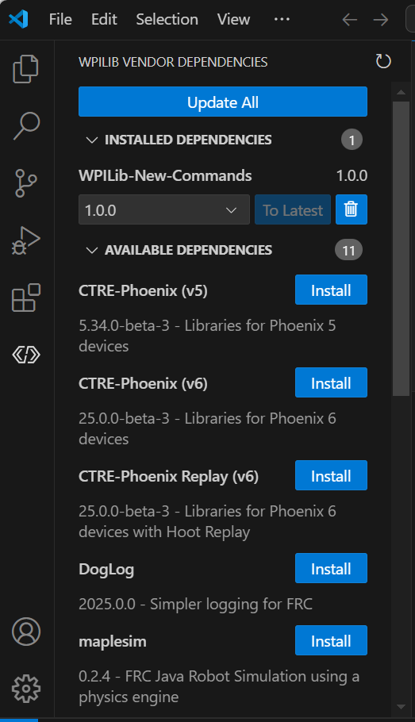
Build first. Read the last line.
> Task :compileJava > Task :jar BUILD SUCCESSFUL in 14s
Intake.java:12: error: cannot find symbol kIntakeSped BUILD FAILED in 3s
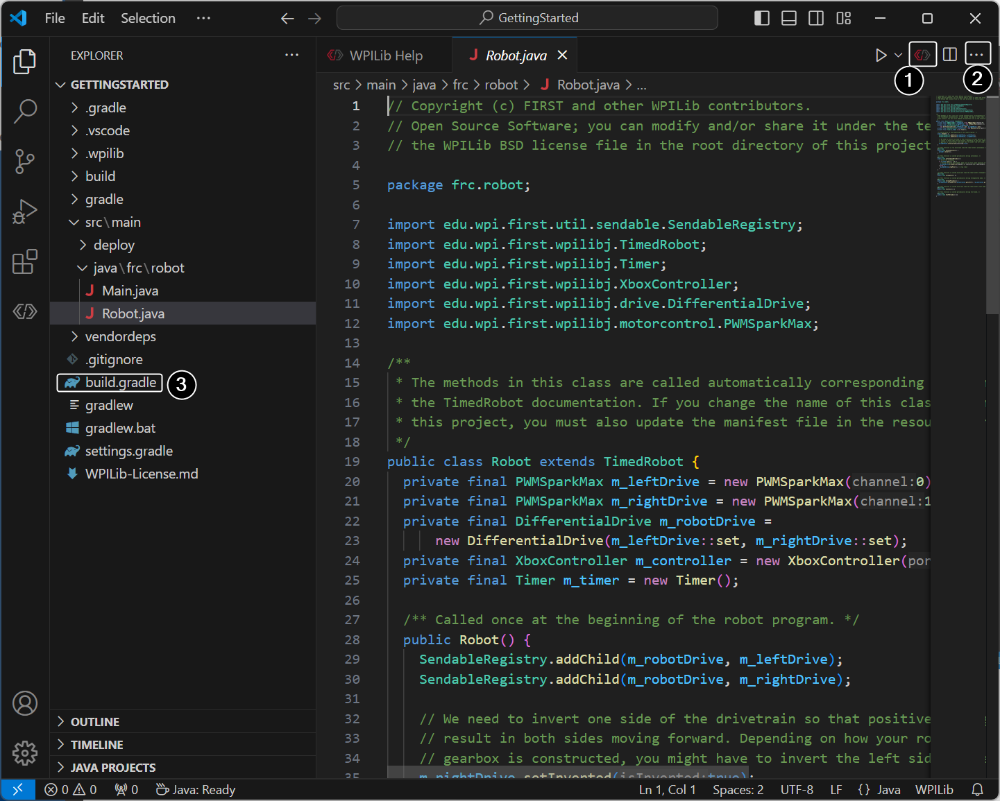
Build Robot CodeWPILib documentation">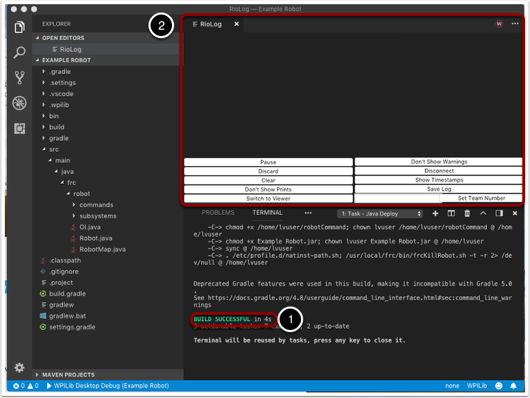
BUILD SUCCESSFULWPILib documentation">Simulation: a robot without a robot
Your code runs on your laptop. A window stands in for the robot.
System.out.println.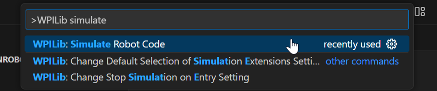
Simulate Robot CodeWPILib documentation">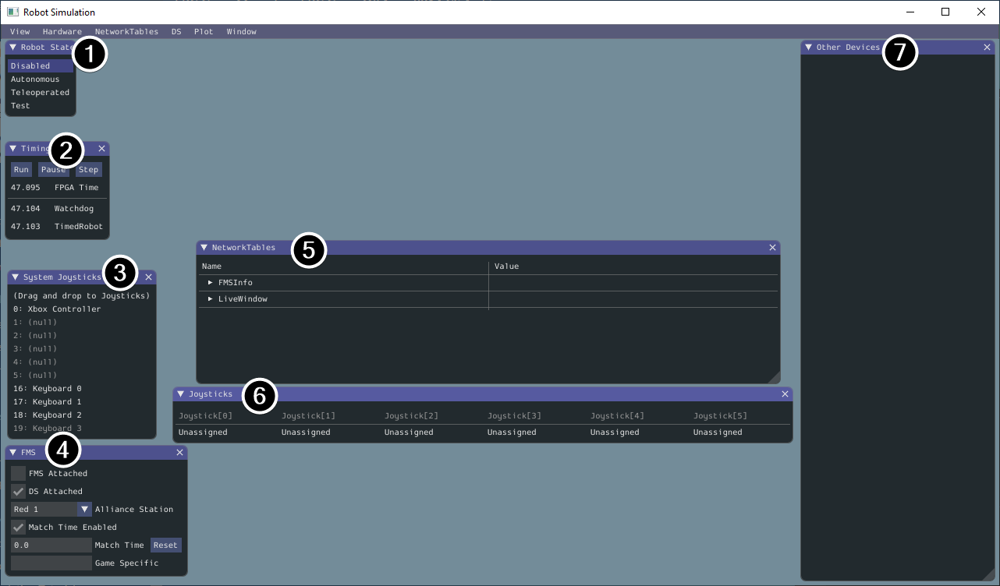
The simulation windowWPILib documentation">Build and simulate your clone
In your Sandbox clone:
- WPILib menu → Build Robot Code. The last line should say
BUILD SUCCESSFUL - WPILib menu → Simulate Robot Code → Sim GUI
- Robot State: Teleoperated → pick Driver Control → Enable
- Click inside the simulation window, then hold P
- Let go, then hold Q. What does the console say each time?
Intake: running at 0.5 Intake: stopped Shooter: spinning at 0.75 Shooter: stopped
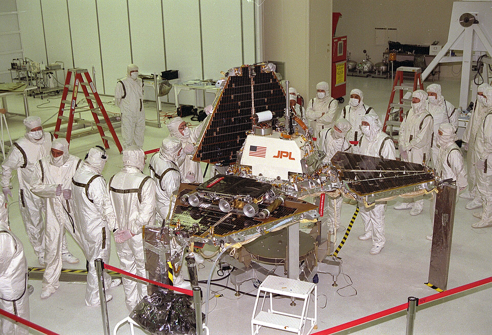
Deploy: send it to SystemCore
********** Robot program starting ********** Intake ready on channel 0
It can corrupt SystemCore's storage, and the fix is re-imaging it. Wait for BUILD SUCCESSFUL and the RioLog.
Remember booting from our first session? Cutting power while the computer is writing files breaks them.
Deploy to the bench SystemCore
Intake: running at 0.5Intake ready on channel 0Intake.java, change the "Intake ready" messageRecharge!
Back in 10 minutes. Next: what happens when two people change the same line.
Merge conflicts
When two people change the same line
kIntakeSpeed = 0.5;ana-intakekIntakeSpeed = 0.5 0.8;ben-intake-speedkIntakeSpeed = 0.5 0.6;main now says 0.8.Reading a conflict
<<<<<<< HEAD public static final double kIntakeSpeed = 0.8; ======= public static final double kIntakeSpeed = 0.6; >>>>>>> ben-intake-speed
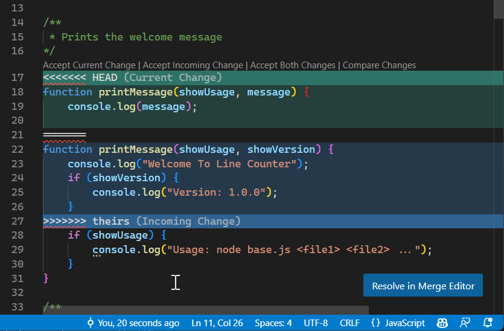
You decide: three conflicts in Constants.java
How to avoid most conflicts
Pull often
Start every work session with Sync on main.
Small, short branches
A day or two of work, then a pull request.
One person per file
When you can. Split big jobs by mechanism.
Say what you're working on
Tell the team before you start. Two people fixing the same bug is a conflict waiting to happen.
Make a conflict, then fix it
Partner A and Partner B, each on your own laptop:
- A: from
main, create branchpair-Nand Publish Branch - B: Sync, click the branch name, pick
origin/pair-N - Both: change
kIntakeSpeedinConstants.javato different values, then commit - A: Sync first
- B: Sync. Conflict! Use the Accept buttons, save, stage, commit, Sync
- Swap roles with
kShooterSpeed
main.CONFLICT-PRACTICE.md in the Sandbox. It has these steps with pictures.Driver Station and safety
The FIRST Driver Station
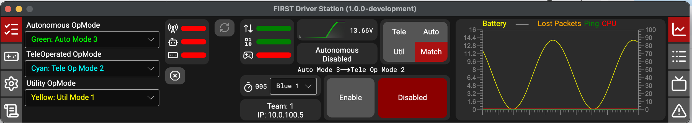
This is the window drivers use to run the robot. It only works with SystemCore.
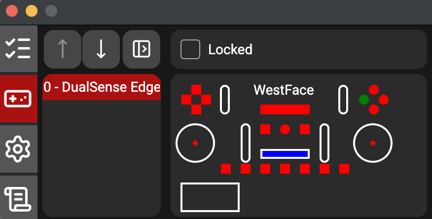
E-Stop: the spacebar
Press Space to stop it.
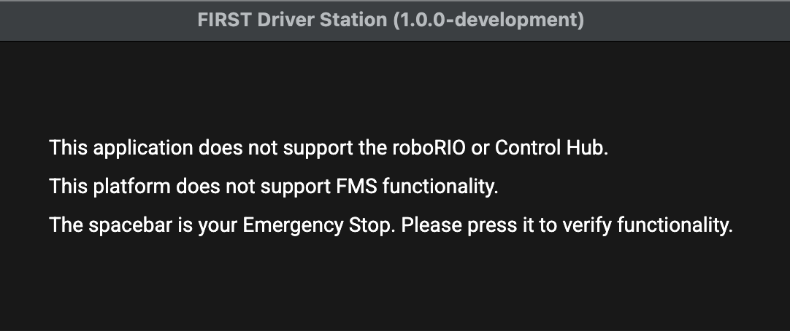
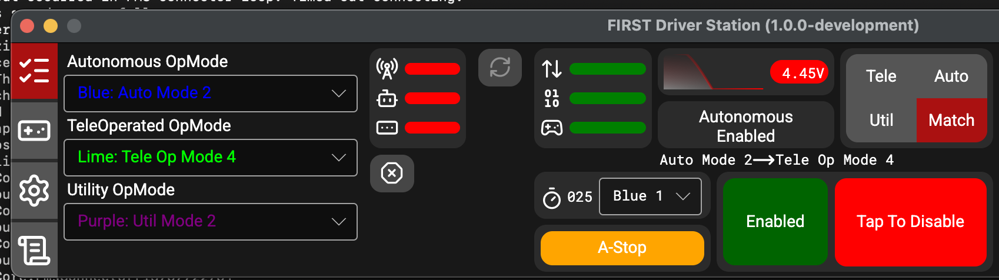
Three rules before you enable
Look
Everyone clear of the robot. Safety glasses on.
Call
Shout "Enabling!" and wait for "Clear!"
Hand on E-Stop
Someone is ready on the spacebar the whole time.
Dashboards and logs
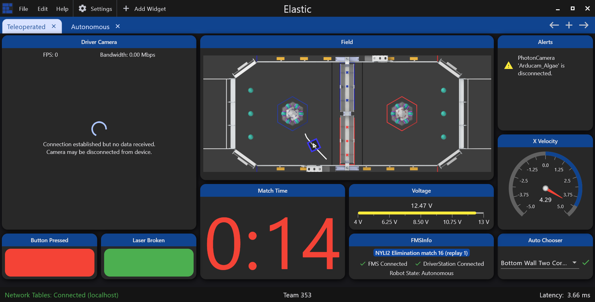
Elastic live dashboard
Values from robot code while it runs: speeds, sensors, which auto is selected.
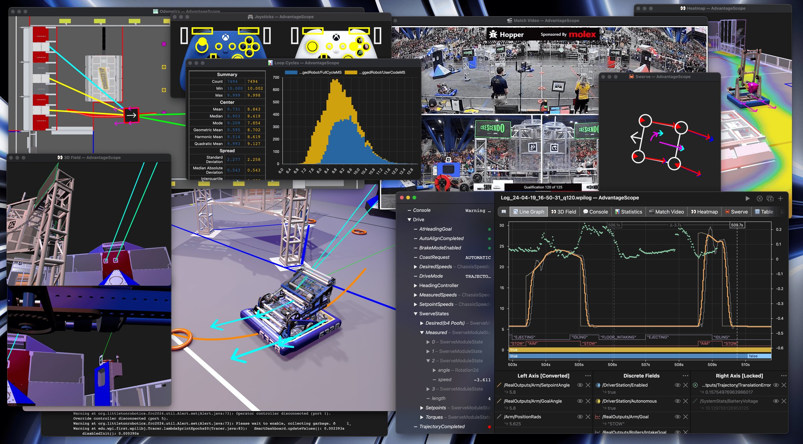
AdvantageScope graphs and replay
Graphs, a 3D field, and replays of match logs. The Driver Station saves WPILog files it opens.
Autonomous with PathPlanner
PathPlanner: draw the route, the robot drives it
src/main/deploy/pathplanner, so they ride along with every deploy.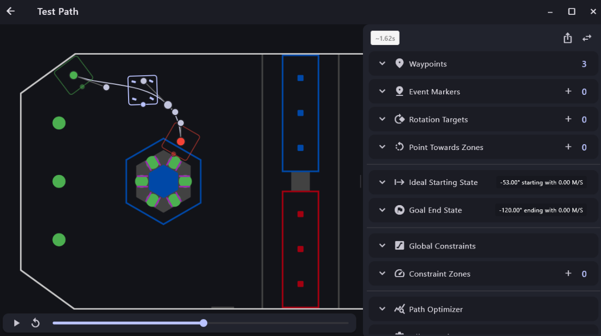
Paths: drawing the route
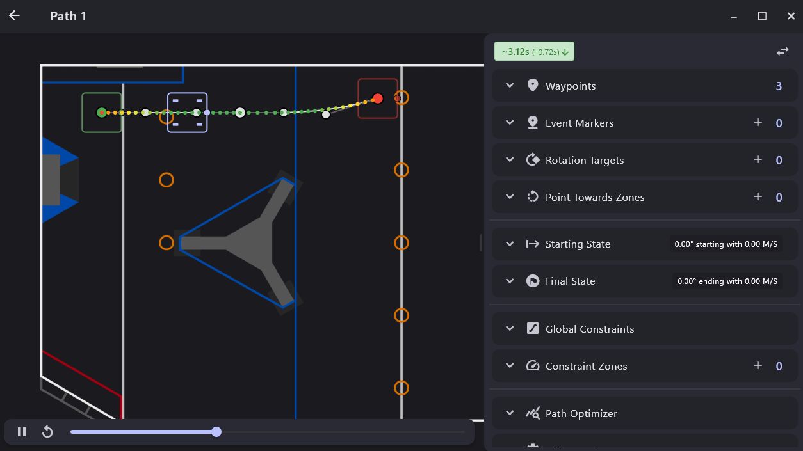
Watch it drive: preview, then simulate
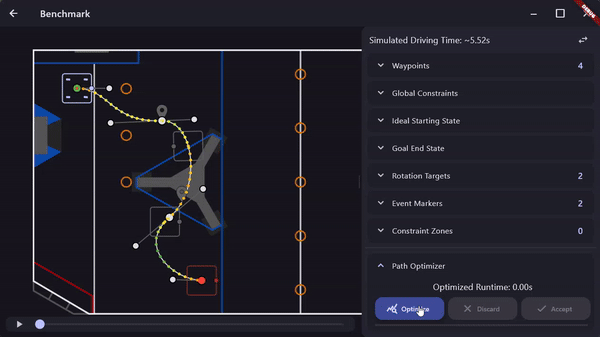
In the app preview
Press play and a robot outline drives the path, with the driving time. The Path Optimizer can reshape it to be faster.
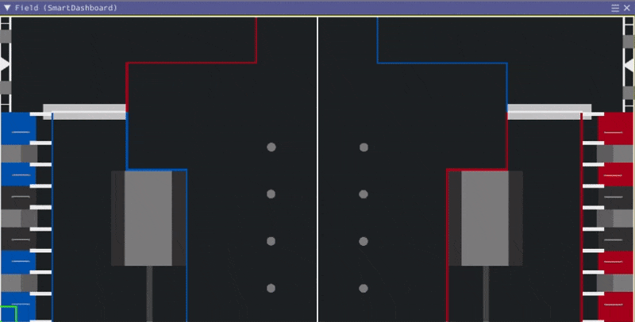
In simulation robot code
Run the robot code in simulation and the robot follows the path on the field view. Here it also finds its own way to the start.
Autos: paths plus commands
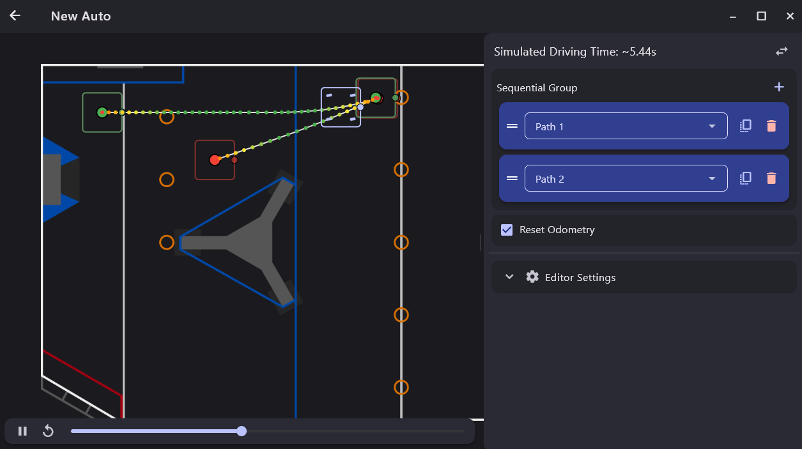
intakeDown, a programmer must register a command called intakeDown. A typo means that step does nothing.Paths are code too
build.gradle).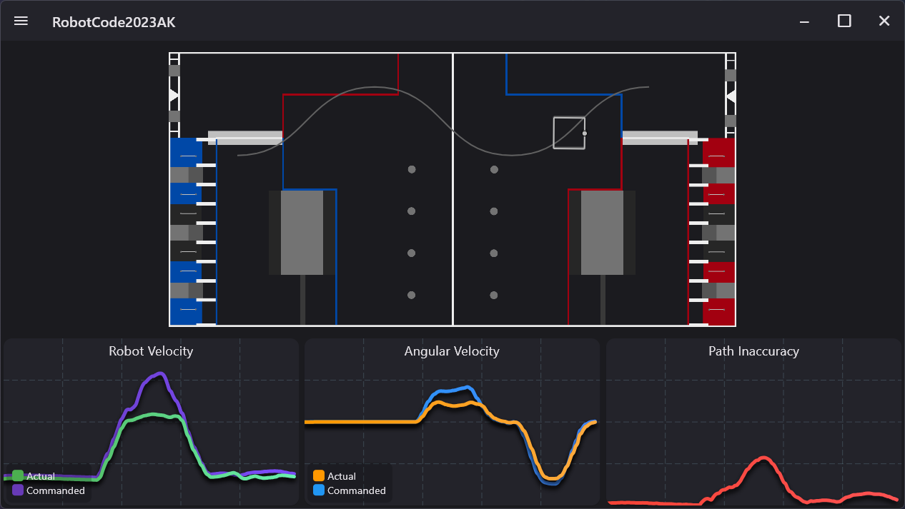
Telemetry: grey is where the robot should be, white is where it is. The graphs compare commanded and actual speed.
Putting it together
One change, all seven stops
main, create a branchkIntakeSpeed in Constants.javaAt home, you'd open a pull request so a mentor can review it and merge it into main.
The full loop, in simulation
private int loops = 0;
@Override
public void robotPeriodic() {
Scheduler.getDefault().run();
!! loops++;
!! if (loops % 50 == 0) {
!! System.out.println("Alive! Loop " + loops);
!! }
}
The loop runs every 20 ms, so 50 loops is one second. % gives the remainder.
Steps
- Sync
main, then branchyourname-alive - Add the gold lines to
Robot.java - Build Robot Code
- Simulate, pick Driver Control, choose Teleoperated, watch the console
- Commit and Publish Branch
Done early? Print the loop count in seconds instead.
Five things to remember
Ctrl/Cmd+Shift+P finds every command.
Commit small, branch always, pull request to merge.
Build and test in simulation before you deploy.
Never power off during a deploy.
Three rules before every enable.
How much do you remember?
1 · Which file holds our team number?
2 · What does a pull request ask for?
3 · What do <<<<<<< and >>>>>>> mean?
4 · First thing before enabling?
Robots
& WPILib
Power, SystemCore, motors, CAN and sensors, then commands that make them move. Our last bootcamp session.
Nice! Can this number go in
Constants, so we can find it later?